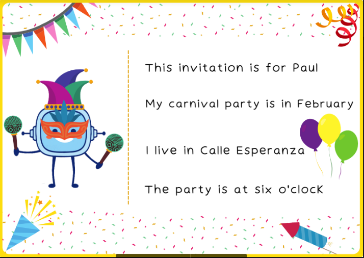

1. What have you learnt?
Hi guys!
Our first trip has come to an end.
I hope you enjoyed it!
Here I show you all we have learnt.
See you soon!
Hi guys!
Our first trip has come to an end.
I hope you enjoyed it!
Here I show you all we have learnt.
See you soon!
 We come to the end.
We come to the end. Remember.
Remember.In this last step, I am going to ask you to think about what has been the most important thing you have learnt in order to achieve the challenge. What you discover by thinking, will help you when you have to meet similar challenges in the future. Stop for a moment and complete STEP 4 of your Learning Journal! (What have I learnt?)
Remember:
Go for it, you'll do great!
En este último paso te voy a proponer que pienses en qué ha sido lo más importante de todo lo que has aprendido para conseguir el reto que te proponíamos.
Lo que descubras pensando en ello te servirá para cuando tengas que alcanzar retos parecidos en un futuro.
¡Para un momento y completa el PASO 4 de tu Diario de aprendizaje! (¿Qué he aprendido?)
Recuerda:
¡Ánimo, que lo harás genial!
Now, you are going to evaluate your work!
Colour the characters according to your performance.
Document to fill out: (Opens in a new window)
Did you enjoy learning with us?
I encourage you to make another invitation.
Here I show you mine.
It’s about a carnival party!
 Do you like this REA?
Do you like this REA?
 Make a invitation card.
Make a invitation card.
To conclude, let's remember the strategy or "trick" that you have learnt during this challenge. We taught you this strategy or "trick" and you worked on it in the section “Choose a good work context”. Go back to that section and review for a moment what it consisted of and how it helped you to achieve the challenge we proposed you. Now open the Learning Diary and complete the last page. In this section you will keep valuable information about the strategy, in which activities you have applied it, whether it has been useful and what has been most difficult for you.
Keep up the good work, you're doing great!
Thanks to your efforts you have won your first badge, which you will be credited with as Congratulations!
Remember:
Para concluir, vamos a recordar la estrategia o el “truco” que has aprendido durante este reto. Esta estrategia o “truco” te lo enseñamos y lo trabajaste en el apartado “Elegir un buen contexto de trabajo”. Vuelve a dicho apartado y repasa un momento en qué consistía y cómo te sirvió para llegar a conseguir el reto que te proponíamos. Abre, ahora, el Diario de Aprendizaje y completa su última página. En este apartado guardarás información valiosa sobre la estrategia, en qué actividades las has aplicado, si ha sido útil y qué te ha resultado más difícil.
¡Sigue trabajando así! ¡Lo estás haciendo genial!
Por tu esfuerzo has conseguido aquí la primera insignia que te acreditará como Mega-Aprendiz.
¡Enhorabuena!
Recuerda:
Licensed under the Creative Commons Attribution Non-commercial Share Alike License 4.0